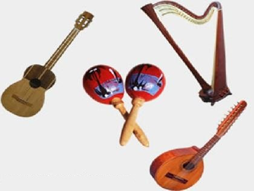

El departamento de Santa Rosa cuenta con múltiples artesanías representadas por artículos elaborados con jarcia, tul, palma, cueros y cerámicas.
Entre sus principales artesanías sobresalen:
Tejidos de Algodón: Diversos tipos de prendas de vestir se confeccionan en los municipios de Barberena, Nueva Santa Rosa, Casillas, Cuilapa y Chiquimulilla.
Cestería: Para producir artículos de cestería se utiliza como materia prima la palma, tule, mimbre, zibaque y vasra de bambú. Con ella producen canastos, petaquillas y petacas. Se elaboran en los municipios de Pueblo Nuevo Viñas, Barberena, Cuilapa y Casillas.
La Jarcia: Utiliza como materia prima la fibra del maguey, que se extre de la penca del maguey, raspada con machete para quitar la corteza y dejar al descubierto la fibra, la cual una vez extraída, se lava y se seca al sol. Con ella se elaboran bolsas, alforjas, morrales, lazos para tender ropa y hamacas. Se elaboran en los municipios de San Rafael Las Flores y San Juan Tecuaco.
Muebles: Los carpinteros locales fasbrican diferentes tipos de muebles como mesas, sillas, roperosy trinchantes, los cuales se trabajan en los municipios de Santa Cruz Naranjo, Santa Rosa de Lima, Nueva Santa Rosa, Barberena, Cuilapa, Pueblo Nuevo Viñas, Guazacapán, Chiquimulilla y San Juan Tecuaco.
Instrumentos Musicales: Se elaboran instrumentos musicales tradicionales como guitarras y contrabajos. Estas artesanías se trabajan en los municipios de Santa Cruz Naranjo y Chiquimullilla.

Cueros: Al arte de trabajar los cueros se le llama talabartería y al que la trabaja talabartero. En ese campo se producen aperos para vaquería, sillas de montar, fundas para machetes y armas de fuego. respaldos para automóviles, bolsas para señora y arganías para llevar carga.
Además de estas artesanías, existen muchas más que son trabajadas por pobladores de los municipios de ete departamento. Entre ellas se mencionan, productos de palma, orfebrería, cerería, cerámica, materiales de construcción, ladrillos, tejamanil, tul y pirotécnia.